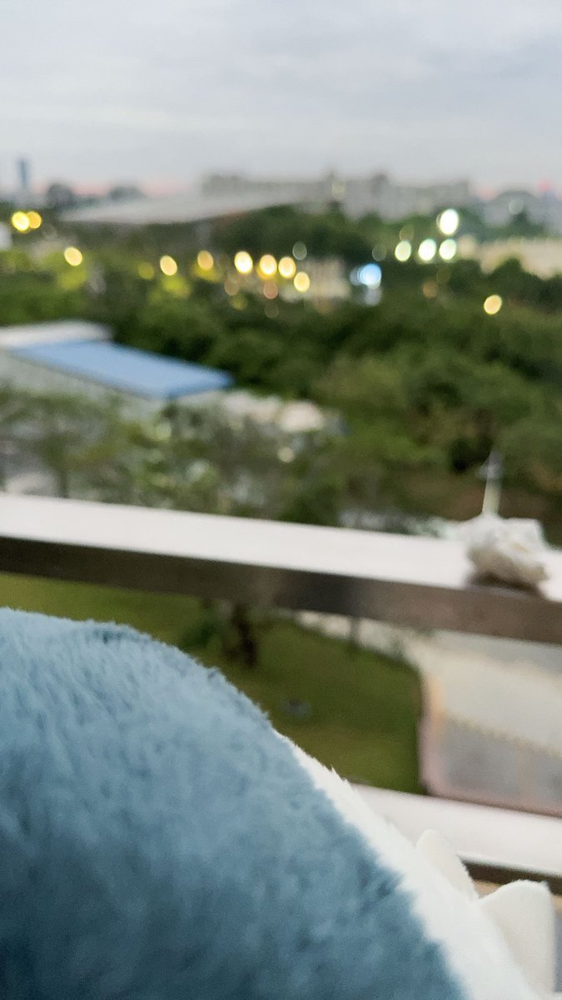

Rain Antares🏳️⚧️🍥
@Rain_Antar1121
@ye_and_yae 咱会对你说没事哒～想去抱你啦🥹
这种聚会散去后的空虚好珍贵呀，好怀念呢…心灵第一次被填满的感觉以后再也无法替代了呢☺️
唔，也许见多了聚散离合，这种伤心就会被磨淡了…不过要是不会淡掉的话岂不更好ww因为这代表你心里有着足够重要的人呢～会很幸福哦
不妨开始期待下一次抱抱…要咱去找你嘛～

🚀爱晔&禾木白🍥
@ye_and_yae
六年来的第一次，意识到你们走后我在床上痛哭，从床上哭到阳台，为什么这时不在我身边了呢…为什么没人抱住我了…我用鲨鲨蹭眼泪但是鲨鲨不会抱住我的头说没事的…
不想分开不想分开 https://t.co/1NOpgDB2bk